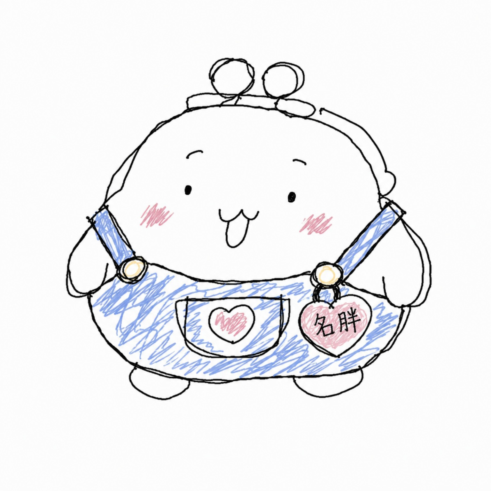
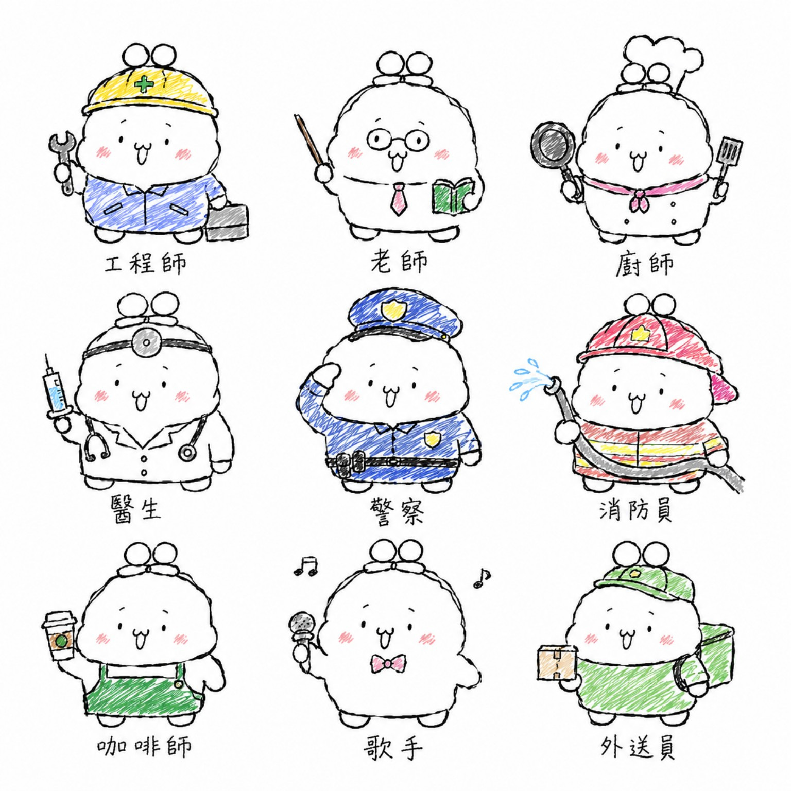
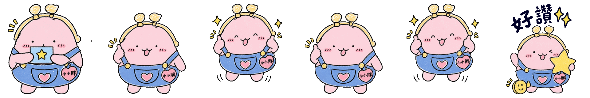
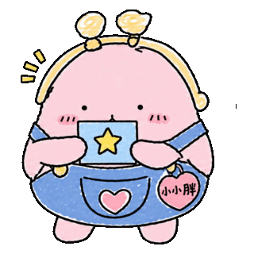
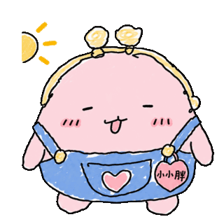
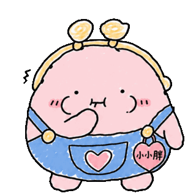
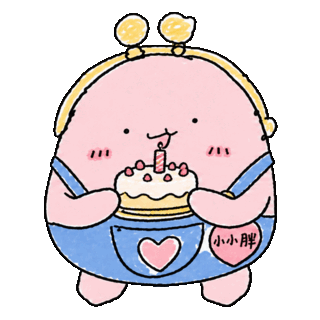

生活觀察
先決定今天小小胖到底在做什麼，以及藏在哪個小失敗裡。
ORIGINAL CHARACTER · TAIWAN
一個把普通生活過得很認真，
明明很菜，卻莫名活得很成立的胖錢包。

“I created the character concept, fixed visual identity, personality, expressions, captions, storyboards and animation sequences.”
— LiNa, Creator01 · CHARACTER IDENTITY
像錢包，也像兩顆隨時準備點頭的小燈泡。
柔軟、無辜；事情越荒謬，表情越一本正經。
黃鈕扣、正面愛心口袋，是角色不可替換的識別。
固定掛在右側。牠可能忘記帶鑰匙，不會忘記姓名。

ONE CHARACTER, MANY DAILY ROLES
小小胖會工作、吃飯、喝水、睡覺、逛街與發呆。眉毛、嘴型、手勢隨情境改變；粉紅錢包身、黃色口金、藍色吊帶褲、愛心口袋與吊牌保持一致。
02 · CREATION PROCESS
Each piece is directed, revised and finished as an individual animation.
先決定今天小小胖到底在做什麼，以及藏在哪個小失敗裡。
鎖定角色 DNA，設計表情、動作、道具、文字與四段節奏。
使用數位與 AI 輔助工具產生工作圖，再逐格篩選、重畫與修正。
去背、裁切、對齊中心與腳底線、調整停頓，輸出透明循環 GIF。
WORKING FILE → FINAL GIF
四個動作格依序設計：看見星星、單手讚、雙手讚、抱住大星星。完成後統一比例與基準線，加入停頓並檢查透明背景與循環殘影。


03 · SELECTED ANIMATIONS



All characters, captions, storyboards and final animations shown on this page are original works owned by LiNa / 微笑娜生活™.
CREATOR & RIGHTS HOLDER
Founder of 微笑娜生活™ / NiNa™
Creator of 小小胖 / Little Fat Wallet
I confirm that I am the original creator and owner of the character and content presented here. I developed the concept, visual identity, personality, expressions, captions, storyboards and animation ideas. Digital and AI-assisted tools are used as part of my production process; I direct, revise, align, edit and export each final work.
Threads @_smilenalife_tw ↗